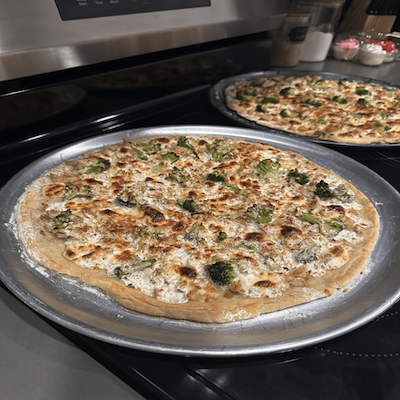

Yield: (2) 13" Pizzas
Hydration: 68%
Ingredients:
Flour: 280g
Salt: 7g
Yeast: 1g
Water: 190g
Directions:
- Combine ingredients into mixer bowl. (Water, Yeast, Flour, Salt)
- Mix on low for 5-10 minutes, kneed with hands if less time.
- Roll into ball, leave in tupperware for 48-72 hours.
- Before making pizzas, place pizzas on sheet pan sprayed and let sit (room temp) for 5 hours.
- Place dough on floured surface and stretch. (YouTube: The Pizza Gavones TM). Transfer to prep surface.
- Put toppings on pizza.
Baking Instructions (Sheet Pan/Pizza Steel):
- Sheet Pan: Preheat to 525 (Switch racks every 10 minutes). Once good structure, broil 3 minutes.
- Pizza Steel/Stone: Preheat to 500-550 (1 hour). Bake 5 minutes, spin every 1.5 minutes. Broil finish